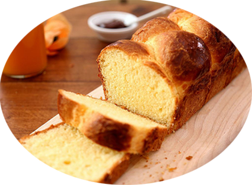

Brioche

Pour 8 personnes
Préparation : 30 mn
Repos : 2h + 30 mn
Cuisson : 45 mn
Ingrédients
- 500 gr de farine
- 40 gr de sucre
- 20 gr levure de boulanger fraiche
- 2 oeufs
- 20 cl de lait
- 80 gr de beurre
- Eau de fleur d'oranger
Recette
- Prélevez un peu de lait tiède et diluez-y la levure.
- Dans un bol, mettez la farine, le sucre, l'eau de fleur d'oranger, les œufs ,la levure et le lait tiède.
- Pétrir à vitesse lente pendant 2 ou 3 minute, puis 10 minutes vitesse moyenne
- Couper le beurre en morceaux et ajoutez le petit à petit en continuant de pétrir.
- Pétrir la pâte vitesse moyenne jusqu’à ce qu’elle se détache des parois.
- Laisser lever jusqu’à ce qu’il est doublé de volume.
- Dés que la pâte a doublé de volume, la travailler rapidement et la verser dans un moule fariné.
- La laisser monter jusqu’au bord du moule.
- Avant d’enfourner, badigeonnez le dessus de la brioche à l’aide d’un pinceau avec un œuf battu pour obtenir une dorure bien foncée, ou avec du lait pour une dorure plus claire.
- Faire cuire au four 180° pendant 40 mn à 45 mn (25 à 30 mn pour des moules mini-cake).
|